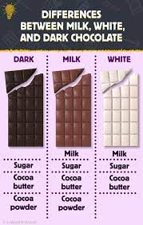

Chocolate's story began over 4,000 years ago with ancient peoples like the Olmec, Maya, and Aztec. They didn't eat chocolate bars; they drank a bitter, spicy drink made from cacao beans. It was important for their ceremonies and even as medicine! Then, Spanish explorers brought cacao to Europe in the 1500s. People there still drank it, but they started adding sugar to make it sweet. Fast forward to the 1800s, and new machines changed everything! That's when we got solid chocolate bars and candies, making chocolate a yummy treat everyone could enjoy. Now, chocolate is loved all over the world. Isn't it amazing how a bitter drink became one of our favorite sweets? .
